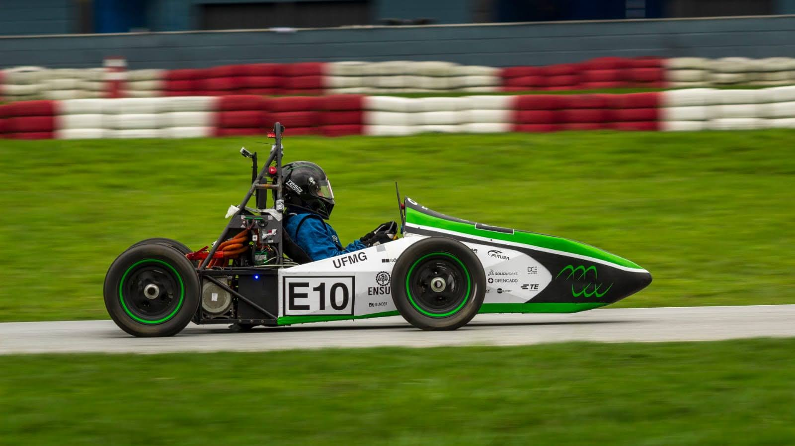

Formula Student Simulation & Tooling
MatLab | Python | Validation

Sensor Data Processing and Model Correlation.
Within Formula Student teams, I developed:
- Non-linear and linear vehicle dynamics models
- Sensor-driven simulation pipelines
- Internal Python/MATLAB tools for analysis, automation, and visualization
- Validation against real-world test track data
- Noise filtering, resampling, and alignment of multi-sensor data
- Correlation against simulation predictions
From initial simulations to real-world validation: the work focused on building a robust simulation and analysis environment to support vehicle development and testing efforts.